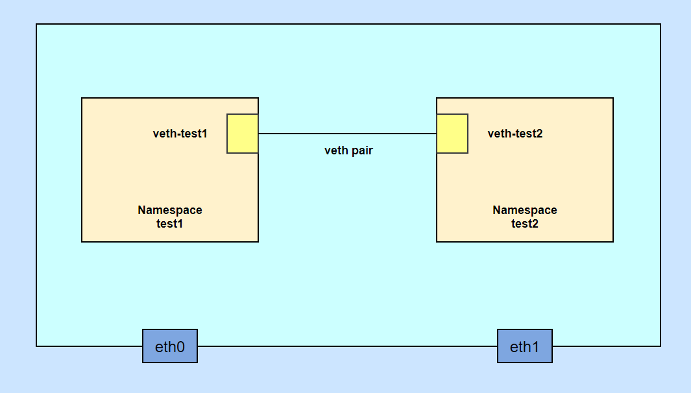
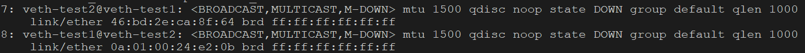
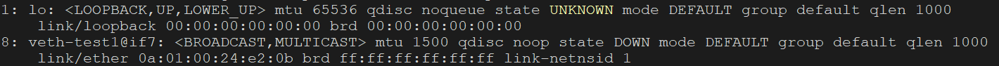
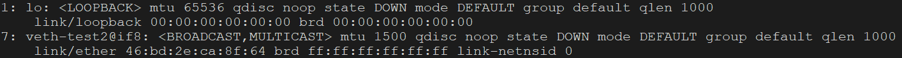

0%
查看命名空间列表
增加命名空间
删除命名空间
进入命名空间执行命令
1
| ip netns exec $name $cmd
|
模拟本机两个docker容器网络互通

- 创建命名空间：test1、test2
1
2
| ip netns add test1
ip netns add test2
|
- 创建veth-pair网络接口对：veth-test1、veth-test2
1
| ip link add veth-test1 veth peer name veth-test2
|

- 将veth-test1连接到命名空间test1，veth-test2连接到命名空间test2
1
| ip link set veth-test1 netns test1
|

1
| ip link set veth-test2 netns test2
|

- 给veth-test1和veth-test2设置ip
1
2
| ip netns exec test1 ip addr add 192.168.1.1/24 dev veth-test1
ip netns exec test2 ip addr add 192.168.1.2/24 dev veth-test2
|
- 启动veth-test1和veth-test2
1
2
3
4
| ip netns exec test1 ip link set dev veth-test1 up
ip netns exec test2 ip link set dev veth-test2 up
ip netns exec test1 ip a
ip netns exec test2 ip a
|
- 测试是否veth-test1和veth-test2是否连通
1
2
| ip netns exec test1 ping 192.168.1.2
ip netns exec test2 ping 192.168.1.1
|